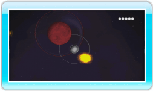

11 |
Stages abschließen |
 |
|
Nachdem du nun die Grundlagen von Orbient kennst, kannst du deine Fertigkeiten einsetzen, um auf deinem Weg durch das Weltall besondere Aufgaben zu erfüllen. 
● Absorption von blauen Planeten Triff mit einem blauen Planeten zusammen, um an Größe zu gewinnen. Je größer du wirst, desto mehr rote Planeten, die du zuvor nicht absorbieren konntest, färben sich blau. Dies bedeutet, dass sie nun absorbiert werden können. Wenn du dich orientieren möchtest, kannst du dir durch einen Druck auf 
● Graue Planeten als Satelliten Wenn du dich geschickt an einem grauen Planeten vorbeibewegst, kannst du ihn als Satelliten anziehen. Schließt du eine Stage in Begleitung von Satelliten ab, erhältst du ihrer Anzahl entsprechend Bonuspunkte. Auch zusätzlich erhaltene Versuche richten sich nach deiner Satellitenzahl. Versuche, vor Abschließen einer Stage möglichst viele Planeten in deine Umlaufbahn aufzunehmen.

● Der Zielplanet als Satellit Sobald dein Planet genauso groß wie der Zielplanet ist, leuchtet dieser orange auf. Ziehe den Zielplaneten mit derselben Technik als Satelliten an, die du bei grauen Planeten anwendest, um die Stage so abzuschließen. Hinweis: Es ist nicht möglich, den Zielplaneten zu absorbieren. Stößt du mit ihm zusammen, verlierst du einen Versuch. ● Ergebnisbildschirm Die Punkte, die du in einer Stage erzielst, errechnen sich aus den untenstehenden Faktoren. Wenn du eine Stage mit einem Sichelmond als Satellit abschließt, erscheint ein Sichelmond-Symbol rechts von deiner Gesamtpunktzahl.
|
 jederzeit deine Umgebung ansehen und deinen weiteren Flug planen.
jederzeit deine Umgebung ansehen und deinen weiteren Flug planen. |
 |
 |